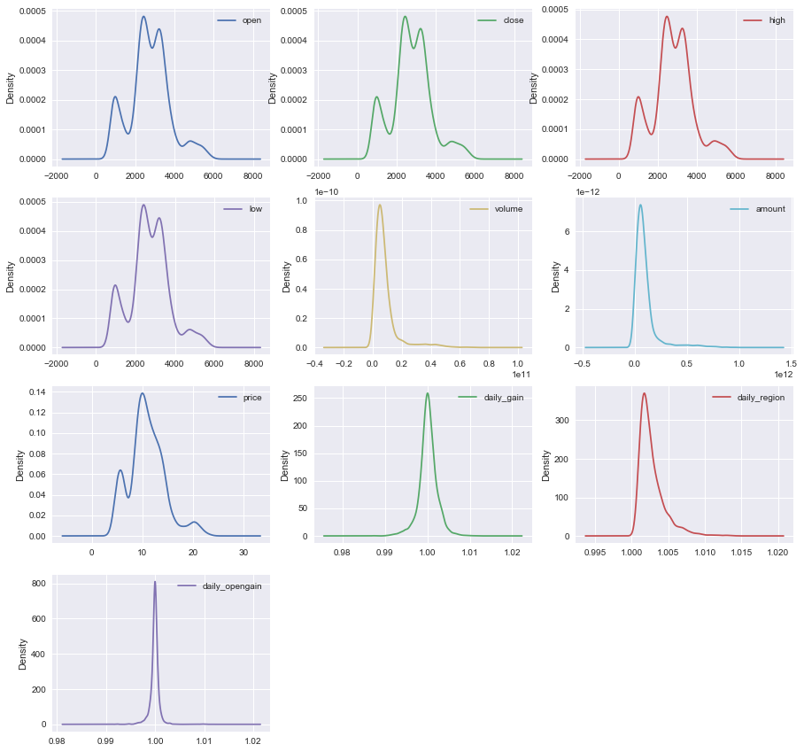

机器学习中特征工程在中国股票市场的应用——基于沪深300指数日度数据
The algorithms we used are very standard for Kagglers. […] We spent most of our efforts in feature engineering. [...] We were also very careful to discard features likely to expose us to the risk of over-fitting our model.
— Xavier Conort, "Q&A with Xavier Conort"（Kaggle首席数据科学家）
“Coming up with features is difficult, time-consuming, requires expert knowledge. "Applied machine learning" is basically feature engineering.”
—Andrew Ng, （吴恩达，斯坦福教授，Coursera中著名的机器学习课程主讲人，前百度人工智能实验室负责人）
简介：
在机器学习中，运用特征工程对于预测结果的准确性至关重要。本文利用Wind资讯金融终端平台获取的沪深300指数日度数据（10年以上，约3000个），通过对原始数据的提取，总共构建67个特征变量。本文运用特征工程主要目的是利用第t-1个交易日的特征维度信息来尽可能提高第t个交易日走势判断的准确率。对67个特征变量经过特征选择后， 形成集成特征打分器，选中排名前3个特征变量作为K-平均聚类方法的输入值。对聚类的结果进行收益率和波动率的统计，证明得到的聚类存在两个明显不同的收益率分布，并基于此提出一个基准择时策略，该策略拥有17%的平均年化收益率，说明了运用特征工程的有效性。
1.背景知识
1.1 特征工程（Feature Engineering）
简单来说，特征工程是将原始数据转化为特征，并运用这些特征来提升预测目标变量的准确性。
在日常的数据分析中，我们会把数据整理成（观测值，特征维度）的两维数据列表的形式。例如，对于一个人数为50的班级，我们可以从 1 到 50， 对学生进行编号，并选定姓名，性别，身高，体重，成绩 5 个维度作为分析的特征变量。此时我们的得到的就是一个 50 乘 5 的数据框（dataframe）。
1.1.1 特征构建（Feature Construction）
一般来说在目标问题的特定领域分析上，对原特征维度进行组合变换产生新特征维度，就是指特征构建，加入这些新特征会增强模型的解释力（explanatory power）。
例如，如果我们感兴趣的问题是以上班级学生的健康状况，我们可以通过身高和体重计算学生的的BMI（body mass index）值：
BMI（体质指数）=体重（kg）÷ 身高²（m）
通常认为 BMI 在18.5~25之间为合理体重。在这里，BMI 值就是对身高和体重两个维度的组合变换。这种对原特征维度进行变换，来寻找新特征维度的做法，便是特征构建。
1.1.2 特征选择（Feature Subset Selection）
当获得大体量的特征数据集后，由于变量特征的庞大必然存在冗余（redundant）和噪声不相关（irrelevant），需要我们选择有意义的特征输入机器学习的算法和模型进行训练，这就是特征选择。
一般一个完整的特征选择过程包括四个步骤,如下图所示：
1.子集搜索（subset generation/search）：按照一定的搜索策略产生候选特征子集；
2.子集评估（subset evaluation）：通过某个评价函数评估特征子集的优劣；
3.停止条件（stopping criterion）：决定特征选择算法什么时候停止；
4.子集验证（subset validity）：用于验证最终所选的特征子集的有效性。
通常选择特征变量从两个方面考虑：
特征是否发散：如果一个特征不发散，例如方差接近于0，也就是说样本在这个特征上没有差异，基本是一个均匀分布。那么该特征对于目标变量的区分并没有什么用。
特征与目标的相关性：这个比较容易理解，与目标相关性高的特征，应当优选选择。
根据特征选择的具体过程又可分为3种:
过滤法（Filter）：按照发散性或相关性对各个特征进行评估，设定阈值或待选特征个数。过滤式特征选择的评价标准从数据集本身的内在性质获得，与特定的学习算法无关，因此具有较好的通用性。
封装法（Wrapper）：根据目标函数，每次选择若干特征，或者排除若干特征，即需要经过多次子集评估后到达目标函数的停止条件后结束。封装法利用学习算法的性能来评价特征子集的优劣，由于是专门训练得到模型通用性不强，且算法计算复杂度高，执行时间长。
嵌入法（Embedded）：特征选择算法本身作为组成部分嵌入到学习算法里。通过递归自适应调节各个特征变量的系数直至收敛。与wrapper相比最大区别就是特征子集不需要按方法搜索，靠算法自动选择。
1.1.3 集成学习方法（ensemble learning method）：
通过特征工程产生了大量的特征变量，数据集中包含噪音，共线性，非线性相关等问题。通过集成学习方法，组合特征选择的多个模型，以获得更好的预测效果，使集成的模型具有更强的泛化能力。可以尽量减少数据和单一特征选择方法引起的问题，并改善特征选择的效果。
1.1.4 特征抽取（feature extraction）
特征抽取也称作特征降维，与特征选择只是对特征进行筛选不同，特征提取是指利用已有的特征计算出一个抽象程度更高的特征集，从原有的较多维度特征数据降低为较低维度特征数据。以此估计的模型，往往有比原来更好的预测效果。
1.2股票市场（Stock Market）
1.2.1 股票指数
我们经常能听到股市怎么怎么好，大盘又涨了XX点，其实说的对象就是股票市场中的指数，在国内经常提到的是上证指数（000001）和深证成指（399001），它们分别反映了上海证券交易所和深圳证券交易所上市股票的整体走势。
1.2.2 沪深300指数
本文主要的研究对象是沪深300指数（000300），是在上海和深圳证券交易所中选取300只A股作为样本编制而成的成份股指数。
沪深300指数主要优势是反映沪深两个市场整体走势的“晴雨表”。指数样本选自沪深两个证券市场，覆盖了沪深市场六成左右的市值。成份股为市场中市场代表性好，流动性高，交易活跃，规模大的主流投资股票，能够反映市场主流投资的收益情况。
2.数据初步探索性分析
2.1数据获取
本文所研究的对象是沪深300指数，原始数据是通过Wind资讯金融数据终端的行情序列导出所得，原始数据如下表所示：
总共3006行*9列数据，时间跨度接近12年（每年大概250个交易日），以2014年12月31日的收盘价为基准（1000点），主要数据包括开盘价，收盘价，最高价，最低价，成交量（股），成交金额（元）。
AخAimport pandas as pd xxxxxxxxxx#read the excel tablehs300 = pd.read_excel('沪深300.xlsx')hs300| 代码 | 简称 | 日期 | 开盘价 | 最高价 | 最低价 | 收盘价 | 成交量(股) | 成交金额(元) | |
|---|---|---|---|---|---|---|---|---|---|
| 0 | 399300.SZ | 沪深300 | 12/31/2004 | -- | -- | -- | 1000 | -- | -- |
| 1 | 399300.SZ | 沪深300 | 1/4/2005 | 994.769 | 994.769 | 980.658 | 982.794 | 741286894 | 4431977418 |
| 2 | 399300.SZ | 沪深300 | 1/5/2005 | 981.577 | 997.323 | 979.877 | 992.564 | 711910898 | 4529208214 |
| 3 | 399300.SZ | 沪深300 | 1/6/2005 | 993.331 | 993.788 | 980.33 | 983.174 | 628802905 | 3921015420 |
| 4 | 399300.SZ | 沪深300 | 1/7/2005 | 983.045 | 995.711 | 979.812 | 983.958 | 729869409 | 4737469399 |
| 5 | 399300.SZ | 沪深300 | 1/10/2005 | 983.76 | 993.959 | 979.789 | 993.879 | 579169799 | 3762932890 |
| ... | ... | ... | ... | ... | ... | ... | ... | ... | ... |
| 3001 | 399300.SZ | 沪深300 | 5/12/2017 | 3350.94 | 3387.27 | 3349.17 | 3385.3787 | 9338646600 | 97522124500 |
| 3002 | 399300.SZ | 沪深300 | 5/15/2017 | 3391.59 | 3406.58 | 3391.59 | 3399.1937 | 8297761100 | 92183332800 |
| 3003 | 399300.SZ | 沪深300 | 5/16/2017 | 3390.93 | 3428.85 | 3373.55 | 3428.6491 | 10524241600 | 1.12814E+11 |
| 3004 | 399300.SZ | 沪深300 | 5/17/2017 | 3423.19 | 3433.97 | 3408.15 | 3409.9656 | 9973683700 | 1.10553E+11 |
| 3005 | 399300.SZ | 沪深300 | 5/18/2017 | 3387.67 | 3409.93 | 3383.93 | 3398.1127 | 8575958900 | 8809116600 |
3006 rows × 9 columns
2.2 数据预处理
2.2.1 生成对数收益率
原本这一节的内容应放在下一章的特征构建中，但是收益率是股票市场量化研究的重要目标特征变量对它进行探索性分析非常必要，所以在这一章来讲。
对数收益率公式：
Rt=ln(Pt/Pt-1）
对数收益率（log return）相比普通百分比收益率（simple return）的好处：
对数收益率的可加性：用r1表示t1到t2的收益率，r2同理。如果是对数收益率，则r1+r2即可表示t1到t3的收益率，而普通百分比收益率并不能这样表示。
对数收益率更平稳：取对数可以让数据更加平稳，但是不会改变数据间的相关关系。同时削弱了数据的异方差和共线性，利于模型估计。
2.2.2 数据清洗
该步骤主要用于清洗异常样本和缺失值。在本文的实际应用中由于获取的沪深300指数日数据都是标准的且没有缺失值（除第一行外），所以基本不需要对原始数据进行处理，删去第一行的数据，最终获得基础数据为3005行 ×10列的数据集。
2.3 收益率数据探索性分析
本节对沪深300指数的涨跌情况和对数收益率进行了描述性统计，并作出相关的统计图以更好地展示和说明该数据的情况。
2.3.1 指数涨跌统计和饼图
官方的涨跌概念，是认为第t个交易日的指数收盘价大于第t-1个交易日的收盘价，就可说明指数第t个交易日上涨（这可能与普通大众认为的第t个交易日的指数收盘价大于第t个交易日的开盘价就为上涨不同）。
最终的统计结果如下图所示：总体来看，沪深300指数从2005-01-04到2017-05-18时段内，上涨天数（1614天）多于下跌天数（1391天）。
xxxxxxxxxx#statistics for daily fluctuationup_and_down = hs300['对数收益率'] > 0up_and_down_statistic = up_and_down.value_counts()#pie plotlabel = ['up','down']plt.pie(up_and_down_statistic, labels=label, autopct='%1.2f%%' )plt.show()
2.3.2 对数收益率描述性统计和箱形图
对数收益率的描述性统计结果和箱形图如下所示，相关代码也已列出。我们把对数收益率分成三组，一组是全部数据，一组是上涨的组别，最后一组是下跌的组别，把统计表格与箱形图结合来看：
总体的平均收益率大于0且非常接近于0，然而又发现下跌的平均收益率绝对值大于上涨的平均收益率值，这也间接说明上涨的天数大于下跌的天数。
同时对数收益率整体大于0，上涨的对数收益率与下跌的对数收益率的箱形图基本一致，平均收益率上涨的稍低。
xxxxxxxxxx#descriptive statistics and box plotln_yield = pd.Series(return_rate)up_ln_yield = ln_yield[ln_yield > 0]down_ln_yield = ln_yield[ln_yield < 0]s1 = ln_yield.describe()s2 = up_ln_yield.describe()s3 = down_ln_yield.describe()pd.concat({'all':s1, 'up':s2, 'down':s3}, axis=1)| all | down | up | |
|---|---|---|---|
| count | 3005 | 1391 | 1614 |
| mean | 0.000407 | -0.013216 | 0.0121480 |
| std | 0.018211 | 0.014478 | 0.01178978 |
| min | -0.096949 | -0.096949 | 0.000000355 |
| 25% | -0.007703 | -0.017409 | 0.003421797 |
| 50% | 0.000969 | -0.008632 | 0.008487688 |
| 75% | 0.009449 | -0.003555 | 0.01742251 |
| max | 0.089310 | -0.000006 | 0.08931021 |
xxxxxxxxxx#box plots4 = pd.DataFrame([np.array(ln_yield), np.array(up_ln_yield), np.array(-down_ln_yield)]).Ts4.columns = ['all', 'up', 'down']s4.plot(kind='box', figsize=(15,10), title = 'box plot of daily log return(the down data is absolute value)')plt.ylim(-0.04, 0.04)plt.show()2.3.3 对数收益率的时间序列变化图
如下图所示：可以明显看到对数收益率的变化在两段时期波动剧烈（2007年，2015年，都是大牛市的开端并且达到顶峰后迅速下跌，波动率异常的大）。
再看最近时期的波动率变化，2016年开始收益率变化程度降低，基本上涨跌幅控制在1%范围内，也正说明了股市在证监会的强势监管下逐步趋稳。
xxxxxxxxxx#Log yield Variation in the past ln_yield.plot(kind='line', style='k--', figsize=(15, 10), title='Daily Yield Changes Over Time Series')plt.show()2.3.4 条形图和密度曲线
如下图所示：通过条形图和密度曲线的展示，对数收益率基本符合正态分布，但仔细看会发现均值稍微大于0，主要是因为上涨的天数更多。尤其是收益率在[-0.05,0.05]内上涨大于下跌。
而在收益率绝对值大于0.05 的范围内，下跌的会明显多于上涨的，可以看到小于-0.05收益率这块曲线有一个明显的凸起，而对应上涨部分则是正常曲线。这说明了微涨天数大于微跌天数，而暴跌天数大于暴涨天数，表达了股票市场更倾向于慢慢持久上涨，而下跌时则会短期内迅速下跌。
xxxxxxxxxx#Frequency distribution of up and downln_yield.hist(bins=100, alpha=0.3, color='g', normed=True)#Kernel Density Estimateln_yield.plot(kind='kde', xlim=[-0.1, 0.1], style='r', grid=True, figsize=(15, 10), title='Frequency Distribution Of Up And Down & Kernel Density Estimate Curve')plt.show()3.特征变量构建和可视化分析
本章讲述特征变量的构建，即如何通过原有的特征数据组合计算得到新的特征变量。本文中特征变量的获取方式，一部分纯依靠数据挖掘的方式获得，一部分是为了解决目标问题而依托专业和常识性知识所获得，也有一部分是结合两者特点所获得的特征变量，最终我们把得到的所有特征变量分为三种：基础变量，经典技术指标变量，阿尔法变量。
得到特征变量后，我们通过一系列条形图、箱形图、密度曲线，相关系数热力图等可视化操作分析方式呈现各个特征变量的分布。初步探讨了特征变量的分布以及与目标变量的相关性，为后续进行的特征选择提供参考。
然后我们汇总合并了每个特征数据，并使得它们的时间戳保持一致。最后对每一列特征变量分别进行标准化处理，使得模型估计的系数保持在一定范围内。
由于篇幅有限，每个特征变量的具体公式和概念不在这章里一一列举，具体见附录。
3.1 10个基础变量：
开盘价（open），收盘价（close)，日内最高价(high)，日内最低价（low），成交量（volume），成交总额（amount），成交均价（price），日内涨跌幅（daily_gain），日内区间（daily_region），日内开盘涨幅（daily_opengain）。
3.1.1 基础变量描述性统计和箱形图
如下表和图所示 我们一共得到10个基础变量，其中每个变量长度都统一控制为2047个（与所有变量中的最小值保持一致），时间戳全部对应为2005-04-05——2017-05-18，箱形图中有个别几个区间较小，是因为存在较大的异常值压缩了正常值的显示空间。
| open | close | high | low | volume | amount | |
|---|---|---|---|---|---|---|
| count | 2947 | 2947 | 2947 | 2947 | 2947 | 2947 |
| mean | 2788.831119 | 2791.799181 | 2819.455457 | 2757.694252 | 8.557676e+09 | 1.009196e+11 |
| std | 1006.997616 | 1006.593634 | 1019.906328 | 989.646104 | 8.664803e+09 | 1.178769e+11 |
| min | 816.546000 | 818.033000 | 823.860000 | 807.784000 | 5.962465e+08 | 2.901827e+09 |
| 25% | 2262.310000 | 2265.589500 | 2290.346000 | 2236.145000 | 3.928517e+09 | 4.227502e+10 |
| 50% | 2753.688000 | 2758.495000 | 2784.916000 | 2725.362000 | 6.246805e+09 | 7.062610e+10 |
| 75% | 3349.027000 | 3354.487500 | 3377.174450 | 3327.248500 | 9.408543e+09 | 1.131326e+11 |
| max | 5862.378000 | 5877.202000 | 5891.723000 | 5815.609000 | 6.864391e+10 | 9.494980e+11 |
| price | daily_gain | daily_region | daily_opengain | |
|---|---|---|---|---|
| count | 2947 | 2947 | 2947 | 2947 |
| mean | 10.969191 | 1.000159 | 1.002695 | 0.999901 |
| std | 3.520024 | 0.002128 | 0.001757 | 0.000983 |
| min | 3.943499 | 0.987267 | 1.000437 | 0.991165 |
| 25% | 9.028242 | 0.999178 | 1.001526 | 0.999634 |
| 50% | 10.650831 | 1.000153 | 1.002186 | 0.999962 |
| 75% | 12.921256 | 1.001246 | 1.003329 | 1.000250 |
| max | 23.517610 | 1.010637 | 1.013976 | 1.011364 |
3.1.2 基础变量的条形图和密度曲线
特征变量基本都呈现正态分布，大部分数值集中在一个区间。有一个有趣的现象，基础变量中的四个价格，open，close，high，low 在1000-2000点之间呈现一个最低点，这可能说明沪深300指数较快的跨越了这个区间，并且以后下跌也很难跌到这个区间里。

3.1.3 基础变量的相关系数表和热力图
以下就是10个基础变量加上目标变量（第二天的对数收益率）的相关系数表和热力图。按绝对值大小来比较，之前提到的四个价格的基础变量加上price与对数收益率的相关系数的绝对值在 0.08-0.09 范围，属于较高的水平，其余的差一些。但是这五个基础变量，本身也存在较为严重的共线性。
| open | close | high | low | volume | amount | ... | ret | |
|---|---|---|---|---|---|---|---|---|
| open | 1.000000 | 0.998581 | 0.999499 | 0.999237 | 0.443139 | 0.545025 | ... | -0.082633 |
| close | 0.998581 | 1.000000 | 0.999281 | 0.999307 | 0.445490 | 0.546691 | ... | -0.079924 |
| high | 0.999499 | 0.999281 | 1.000000 | 0.999014 | 0.448638 | 0.549896 | ... | -0.081173 |
| low | 0.999237 | 0.999307 | 0.999014 | 1.000000 | 0.439285 | 0.540714 | ... | -0.081665 |
| volume | 0.443139 | 0.445490 | 0.448638 | 0.439285 | 1.000000 | 0.974043 | ... | -0.008074 |
| amount | 0.545025 | 0.546691 | 0.549896 | 0.540714 | 0.974043 | 1.000000 | ... | -0.025198 |
| price | 0.937753 | 0.937114 | 0.938498 | 0.936692 | 0.231188 | 0.360854 | ... | -0.090391 |
| daily_gain | -0.051597 | -0.002042 | -0.029678 | -0.026413 | 0.038838 | 0.021587 | ... | 0.052516 |
| daily_region | 0.113776 | 0.109764 | 0.130415 | 0.088784 | 0.239805 | 0.235414 | ... | 0.001494 |
| daily_opengain | 0.018735 | 0.016985 | 0.013285 | 0.018844 | 0.033436 | 0.040383 | ... | -0.024746 |
| ret | -0.082633 | -0.079924 | -0.081173 | -0.081665 | -0.008074 | -0.025198 | ... | 1.000000 |

3.2 衍生经典技术指标变量(常识性的股票市场经典技术指标)：
我们把技术指标变量细分为以下5类：（具体公式和概念详见附录）
趋势指标：MACD,AMA,TRIX,VHF,RVI
震荡指标：KDJ,BIAS,ForceIndex
超买超卖指标：VR,DPO,NVI,PVI,ROC
能量指标：OBV,PSY
动量指标：MTM6,MTM12,CMO
3.2.1 技术指标变量描述性统计和箱形图
一共20个技术指标变量，基本都是在正常的取值范围内，由于无量纲，不同变量之间在进行标准化之前无法相互比较，个别变量如ForceIndex，VR，CMO变量中存在个别较大的极端值引起箱形图的长度较窄。
| MACD | AMA | TRIX | VHF | ... | MTM_6 | MTM_12 | CMO | |
|---|---|---|---|---|---|---|---|---|
| count | 2947 | 2947 | 2947 | 2947 | ... | 2947 | 2947 | 2947 |
| mean | -0.017848 | 16.591102 | 0.037154 | 0.414883 | ... | 4.968615 | 9.867754 | 4.581011 |
| std | 41.232976 | 222.665938 | 1.071344 | 0.122342 | ... | 150.479777 | 217.008249 | 6.696297 |
| min | -244.320432 | -714.074876 | -6.913573 | 0.193536 | ... | -1034.945 | -1178.904 | -17.352639 |
| 25% | -15.243229 | -77.372235 | -0.474844 | 0.323869 | ... | -53.5505 | -78.649 | 1.968651 |
| 50% | 2.04296 | 16.422578 | 0.085551 | 0.394415 | ... | 10.187 | 17.4208 | 2.611093 |
| 75% | 19.480999 | 108.275399 | 0.647835 | 0.48071 | ... | 75.4275 | 110.7555 | 4.348366 |
| max | 185.662115 | 778.41741 | 5.501324 | 0.899901 | ... | 662.842 | 896.987 | 30.332605 |
8 rows × 20 columns
3.2.2 技术指标变量的条形图和密度曲线
基本呈现的都是正态分布，有个别变量的数值会更加集中在小的区间内。
3.2.3 技术指标变量的相关系数表和热力图
20个指标与第二天对数收益率的相关系数绝对值多集中在（0.03-0.05），比之前的五个价格变量低一些。而且从热力图中可以看出20个不同指标间存在明显的共线性。
| MACD | AMA | TRIX | VHF | ... | MTM_12 | CMO | ret | |
|---|---|---|---|---|---|---|---|---|
| MACD | 1 | -0.200796 | 0.421941 | 0.08263 | ... | 0.788774 | -0.006458 | 0.01672 |
| AMA | -0.200796 | 1 | 0.089956 | 0.229946 | ... | 0.357106 | 0.3441 | 0.041914 |
| TRIX | 0.421941 | 0.089956 | 1 | 0.117086 | ... | 0.490951 | 0.116987 | 0.025143 |
| VHF | 0.08263 | 0.229946 | 0.117086 | 1 | ... | 0.200356 | 0.188619 | 0.057175 |
| RVI | 0.641627 | 0.194601 | 0.28462 | 0.264723 | ... | 0.729714 | 0.181005 | 0.051294 |
| K | 0.641103 | 0.262512 | 0.480606 | 0.211701 | ... | 0.72054 | 0.241423 | 0.033573 |
| D | 0.589984 | 0.364085 | 0.301551 | 0.23664 | ... | 0.741481 | 0.27128 | 0.040021 |
| J | 0.589025 | 0.090034 | 0.615213 | 0.142905 | ... | 0.565284 | 0.16122 | 0.019587 |
| BIAS | 0.75398 | 0.215885 | 0.774695 | 0.21108 | ... | 0.812338 | 0.201667 | 0.03325 |
| ForceIndex | 0.148226 | 0.023868 | 0.527503 | 0.057149 | ... | 0.202753 | 0.02134 | 0.029512 |
| VR | 0.388504 | 0.215126 | 0.30803 | 0.302972 | ... | 0.514827 | 0.219894 | 0.018097 |
| DPO | 0.527409 | 0.698932 | 0.427081 | 0.237592 | ... | 0.854124 | 0.27802 | 0.049276 |
| NVI | -0.035288 | 0.141327 | 0.036469 | 0.137088 | ... | 0.057865 | 0.688242 | 0.012894 |
| PVI | -0.001064 | -0.000646 | -0.013698 | -0.077327 | ... | -0.001345 | -0.259608 | -0.023317 |
| ROC | 0.72906 | 0.349514 | 0.519253 | 0.252519 | ... | 0.940146 | 0.245085 | 0.043113 |
| OBV | -0.016637 | -0.045237 | -0.040668 | -0.105039 | ... | -0.042494 | -0.233653 | -0.030358 |
| PSY | 0.468451 | 0.343917 | 0.379963 | 0.250157 | ... | 0.669793 | 0.309883 | 0.046945 |
| MTM_6 | 0.742879 | 0.149755 | 0.687105 | 0.160197 | ... | 0.721156 | 0.147601 | 0.014734 |
| MTM_12 | 0.788774 | 0.357106 | 0.490951 | 0.200356 | ... | 1 | 0.203693 | 0.037635 |
| CMO | -0.006458 | 0.3441 | 0.116987 | 0.188619 | ... | 0.203693 | 1 | 0.031895 |
| ret | 0.01672 | 0.041914 | 0.025143 | 0.057175 | ... | 0.037635 | 0.031895 | 1 |
21 rows × 21 columns
3.3 6个阿尔法变量（通过纯数据挖掘得到的阿尔法因子):
alpha#6，alpha#12，alpha#23，alpha#28，alpha#54，alpha#101（主要参考了《WorldQuant Formulaic 101 Alphas》研究报告中给出的阿尔法因子计算公式，具体见附录）
3.3.1 阿尔法变量描述性统计和箱形图
6个阿尔法变量，其中3个变量 alpha12，alpha23，alpha28由于存在异常值，导致箱形图长度较窄。
| alpha_6 | alpha_12 | alpha_23 | alpha_28 | alpha_54 | alpha_101 | |
|---|---|---|---|---|---|---|
| count | 2947 | 2947 | 2947 | 2947 | 2947 | 2947 |
| mean | -0.343985 | -4.692617 | -14.759806 | -0.00005 | -0.533161 | 0.068314 |
| std | 0.385096 | 58.739018 | 47.081124 | 0.000511 | 0.312609 | 0.581572 |
| min | -0.977364 | -378.179 | -479.929 | -0.003782 | -0.993079 | -0.999979 |
| 25% | -0.650779 | -27.06 | -22.3865 | -0.000269 | -0.826494 | -0.427046 |
| 50% | -0.399601 | -3.4165 | 0 | -0.000038 | -0.573329 | 0.090392 |
| 75% | -0.095957 | 15.7185 | 0 | 0.000158 | -0.241167 | 0.592086 |
| max | 0.92915 | 391.866 | 302.541 | 0.003135 | 0 | 0.999993 |
3.3.2 阿尔法变量的条形图和密度曲线
如下两图所示，其中3个之前提到的阿尔法变量alpha12，alpha23，alpha28，呈现明显的正态分布，另外三个在区间内则分布比较均匀。
3.3.3 阿尔法变量的相关系数表和热力图
6个阿尔法变量与对数收益率的相关系数绝对值有高有低，最高0.07，最低0.007。6个相关系数之间也存在一定的共线性。
| alpha_6 | alpha_12 | alpha_23 | alpha_28 | alpha_54 | alpha_101 | ret | |
|---|---|---|---|---|---|---|---|
| alpha_6 | 1 | -0.05008 | 0.16458 | 0.041802 | 0.058835 | -0.056188 | -0.027319 |
| alpha_12 | -0.05008 | 1 | 0.16686 | 0.126117 | 0.117021 | -0.19541 | 0.002532 |
| alpha_23 | 0.16458 | 0.16686 | 1 | 0.411732 | 0.137108 | -0.197584 | -0.037156 |
| alpha_28 | 0.041802 | 0.126117 | 0.411732 | 1 | -0.060792 | 0.04374 | 0.07416 |
| alpha_54 | 0.058835 | 0.117021 | 0.137108 | -0.060792 | 1 | -0.859041 | -0.007192 |
| alpha_101 | -0.056188 | -0.19541 | -0.197584 | 0.04374 | -0.859041 | 1 | 0.04816 |
| ret | -0.027319 | 0.002532 | -0.037156 | 0.07416 | -0.007192 | 0.04816 | 1 |
3.4 其他特征变量
除前面一共36个特征变量外，在接下来的特征选择中，我们增加其他衍生变量： 1.定义变量在前d个交易日的变化率：
其中x的参数，我们分别输入之前的10个基本变量，d参数分别输入1，5，10。这样我们分别计算了10个基础变量的前1 个，5个和10个交易日的变化率，共另外得到30个特征变量。
2.定义一个 adv20 变量，即指前20个交易日的平均交易量。
3.5 数据合并和标准化处理
本章最后部分，我们把所有生成的67个特征变量与目标变量第二天对数收益率，按时间戳保持一致进行合并。然后对每列数据进行标准化处理，使得最终模型的系数无量纲化，具体公式为： ，其中S为该列数据变量标准差。
4.特征选择
特征选择本质上是一个变量的组合优化（combinatorial optimization）问题。现在我们已经获得了67个特征变量，在建模过程中，每个特征变量有两个可能的状态："保留"和"被剔除"。
那么保留下来的特征变量可能的集合个数是2^67，如果通过穷举法的方式进行求解，需要耗费大量时间和计算资源，如下图所示：
所以我们需要较好的特征选择方法，既快速又高效地完成变量的选择，在前面一章我们已经获取所需的全部变量特征并进行了标准化的预处理，用可视化的工具初步分析了各个特征变量的分散性和与目标变量的相关性。
本章进行特征选择，我们会使用python的scikit-learn模块提供的部分方法进行特征选择，相关代码也会列出。
4.1 Filter过滤法（单变量特征筛选）
4.1.1 Pearson相关系数
Pearson 相关系数是最常用的判断特征和响应变量（response variable）之间的线性关联的标准。在上一章中，我们用计算当前交易日的特征变量与第二天交易日的对数收益率的Pearson相关系数。
xxxxxxxxxxfrom sklearn.feature_selection import f_regression###correlationf, pval = f_regression(hs300.data, hs300.target, center=True)ranks['Corr.'] = rank_to_dict(f, names)4.1.2 距离相关系数（Distance Correlation Coefficient）
距离相关系数是针对 Pearson 相关系数只能表征线性关系的缺点而提出的。其思想是分别构建特征变量和响应变量的欧氏距离矩阵，并由此计算特征变量和响应变量的距离相关系数。详细的定义和计算过程可参考维基百科，由于python中没有提供相关的模块计算距离相关系数，故参考了其他资料，使用了自定义函数。
xxxxxxxxxx###calculation the distance correlationdis_corr = []for i in names: dc, dr, dvx, dvy = dcov_all(np.array(hs300.data[i]), np.array(hs300.target)) dis_corr.append(dr)ranks['Dis_Corr'] = rank_to_dict(dis_corr, names)4.2 Wrapper封装法
4.2.1 基础模型：简单线性回归
xxxxxxxxxxfrom sklearn.linear_model import LinearRegression###simple linear regressionlr = LinearRegression(normalize=True)lr.fit(hs300.data,hs300.target)ranks['LR'] = rank_to_dict(np.abs(lr.coef_), names)4.2.2 递归特征消除法（Recursive Feature Elimination, RFE）
递归消除特征法使用一个基模型来进行多轮训练，每轮训练后，消除若干权值系数的特征，再基于新的特征集进行下一轮训练。虽然该方法，名称中带有递归，但实质上并没有递归存在，我们使用feature_selection库的RFE类来进行特征选择，具体代码如下：
xxxxxxxxxxfrom sklearn.feature_selection import RFE#stop the search when 5 features are left(they will get equal scores)#这里基础模型使用的简单线性回归，目标函数筛选到5个变量为止###calculate the Recursive Feature Eliminationrfe = RFE(lr, n_features_to_select=5)rfe.fit(hs300.data,hs300.target)ranks['RFE'] = rank_to_dict(rfe.ranking_.astype(float), names, order=-1)4.3 Embedded 嵌入法
4.3.1 随机森林（Random Forest）
随机森林算法是把决策树（decision tree）和自助重抽样法（bootstrapping resampling）结合起来的分类或者回归算法。其思想是通过对训练集进行重抽样的方法生成大量的决策树，再把决策树组合起来，从而减少噪音的干扰和过拟合的可能。在 scikit-learn 模块的 ensemble 类中，用随机森林算法进行回归的目标函数是均方差误差函数（Mean Square Error）。
xxxxxxxxxxfrom sklearn.ensemble import RandomForestRegressor###Random Forestrf = RandomForestRegressor(random_state=101) #加入随机种子数，确保每次输出结果相同rf.fit(hs300.data,hs300.target)ranks['RF'] = rank_to_dict(rf.feature_importances_, names)4.3.2 基于正则化的线性回归（Regularization-Based Linear Regression）
首先介绍两个模型结果的评判标准：
赤池信息准则（Akaike information criterion, AIC） 和 贝叶斯信息准则（Bayesian Information Criterions, BIC）
AIC和BIC有相近的数学表达式：
AIC = 2k - 2ln(L) BIC = ln(n)*k - 2ln(L)
其中k为参数数目，L是似然函数（likelihood function）, n是数据中观测值的数量。
AIC 和 BIC 的表达式中均包含了模型复杂度惩罚项（2k和ln(n)* k）和 最大似然函数项（ln(L)）。不同的地方在于，在 BIC 的表达式中，惩罚项的权重随观测值的增加而增加。因此当观测值数量较大时，只有显著关联的特征变量才会被保留，从而降低模型的复杂性。在 AIC 的维基百科词条中，提到了 AIC 在实践中的效果一般优于 BIC。
在建模时，我们可以通过最小化 AIC 或 BIC 来选择模型的最优参数。由表达式可以看出，AIC 和 BIC 倾向于复杂度低（k越小越好）和符合先验假设（L越大越好）的模型。在简单线性回归中，似然函数L是依据残差服从正态分布的先验假设构建的，即如果特征变量的加入能够使残差更接近正态分布，则认为这个特征能够显著改善线性回归模型。
回归模型介绍：
Lasso回归（Least absolute shrinkage and selection operator）和 岭回归（Ridge）
在优化理论（optimization theory）中，正则化（regularization）是一类通过对解施加先验约束把不适定问题（ill-posed problem）转化为适定问题的常用技巧。例如，在线性回归模型中，当用最小二乘法估计线性回归的系数β时，如果自变量存在共线性，系数的估计值将具有较大的方差，因而会影响后续参数的统计检验。如果在最小二乘法的参数估计表达式中添加L1正则项 λ|β|，则称为Lasso线性回归模型：
如果添加L2正则项λβ^Tβ ，则称为岭回归模型（Ridge Regression）：
在线性回归的系数估计中，正则化处理在改善问题的适定性的同时，也会使得系数的估计有偏（biased estimation），因此在选择正则化项的权重λ时，一般的原则是在问题足够适定的前提下，λ应该尽可能小。在接下来的实现中，我们使用上面提到的AIC和BIC来确定正则化项的权重。另外，L2正则化和L1正则化对解施加的是不同的先验约束：L2正则化会令解出现集中分布的特性，而L1正则化则会令解出现稀疏的特性。在Lasso回归中，因为L1正则化会令部分的系数趋近于0，因此也是一种常用的特征选择方法。
随机Lasso回归（RandomizedLasso）
在统计学中，我们通常把这类和自变量和响应变量均存在显著相关性的变量称为混淆变量（confounding variable）。在Lasso回归中，如果存在自变量共线性的问题，则哪一个特征维度被剔除将取决于特征选择子集构建的顺序，从而造成特征选择结果的不确定性。
为了减少 Lasso 回归中特征选择顺序的影响，Python的 scikit-learn 模块 linear_model类 中提供了一个 RandomizedLasso 类。其思路是对训练集的数据进行多次重抽样，从而得到一系列特征选择的子集，再对子集中各个特征变量出现的频率进行统计，剔除掉出现频率低的特征变量。
xfrom sklearn.linear_model import LassoLarsIC###lasso regression based on AIClasso_aic = LassoLarsIC(criterion='aic', max_iter=50000)lasso_aic.fit(hs300.data,hs300.target)ranks['Lasso_AIC'] = rank_to_dict(np.abs(lasso_aic.coef_), names)###lasso regression based on BIClasso_bic = LassoLarsIC(criterion='bic', max_iter=50000)lasso_bic.fit(hs300.data,hs300.target)ranks['Lasso_BIC'] = rank_to_dict(np.abs(lasso_bic.coef_), names)-
xxxxxxxxxxfrom sklearn.linear_model import RandomizedLasso###randomized lasso regressionrlasso = RandomizedLasso(alpha=0.07, random_state=22)rlasso.fit(hs300.data,hs300.target)ranks['Stability'] = rank_to_dict(np.abs(rlasso.scores_), names)-
xxxxxxxxxxfrom sklearn.linear_model import Ridge###ridge regressionridge = Ridge(alpha=7)ridge.fit(hs300.data,hs300.target)ranks['Ridge'] = rank_to_dict(np.abs(ridge.coef_), names)由于未知原因，Lasso_BIC 方法中的所有特征变量前的系数为 0，故删去。
4.4 集成特征打分器（Ensemble Feature Grader, 以下简称EFG）
特征选择的本质上是求解一个计算量随特征变量个数呈指数增长的组合优化问题。基于不同的子集搜索和评价标准，不同的方法给出的都只是一个近似最优解，而解的合理性也将受方法本身的局限性所影响。在真实的数据分析中，如果我们通过特征工程产生大量的特征变量，数据集中必然包含噪音，共线性，非线性相关等问题。
因此，为了系统化地进行特征选择，获得更为合理的相关特征变量子集，在这里我们借鉴机器学习里面的集成学习（ensemble learning）的思想，提出一个集成特征打分器（以下称EFG）。其主要思路是，根据以上特征选择的方法对特征进行打分（分数的取值范围为0到1），观察特征变量在不同方法下的得分，进而计算其总得分，以尽量减少数据和单一特征选择方法引起的问题，并改善特征选择的效果。
最终得到的结果如下表所示，各特征变量按Mean这一列从大到小排列。
| Corr. | Dis_Corr | LR | Lasso_AIC | RF | RFE | Ridge | Mean | |
|---|---|---|---|---|---|---|---|---|
| alpha_28 | 1 | 0.32 | 0.02 | 1 | 0.62 | 0.94 | 1 | 0.7 |
| daily_gain_1 | 0.22 | 0.18 | 0.03 | 0.66 | 0.52 | 0.92 | 0.6 | 0.45 |
| AMA | 0.32 | 0.57 | 0.02 | 0.02 | 0.95 | 0.74 | 0.45 | 0.44 |
| DPO | 0.44 | 0.57 | 0.01 | 0.18 | 0.76 | 0.63 | 0.19 | 0.4 |
| close | 0.42 | 0.18 | 1 | 0 | 0.16 | 1 | 0.07 | 0.4 |
| close_5 | 0.36 | 0.36 | 0.03 | 0.19 | 0.29 | 1 | 0.51 | 0.39 |
| alpha_101 | 0.42 | 0.05 | 0.01 | 0.59 | 0.43 | 0.79 | 0.43 | 0.39 |
| daily_region_1 | 0.76 | 0.19 | 0.01 | 0.13 | 0.85 | 0.53 | 0.2 | 0.38 |
| CMO | 0.18 | 0.55 | 0.01 | 0.3 | 0.63 | 0.68 | 0.22 | 0.37 |
| volume_1 | 0.01 | 0.05 | 0.03 | 0.59 | 0.35 | 0.82 | 0.76 | 0.37 |
| price | 0.64 | 0.3 | 0.01 | 0.38 | 0.4 | 0.66 | 0.2 | 0.37 |
| daily_opengain_5 | 0.15 | 0.2 | 0.01 | 0.28 | 0.84 | 0.84 | 0.23 | 0.36 |
| BIAS | 0.2 | 0.34 | 0.01 | 0.2 | 0.72 | 0.71 | 0.21 | 0.34 |
| daily_region | 0.5 | 1 | 0 | 0.07 | 0.65 | 0.15 | 0.03 | 0.34 |
| daily_gain_5 | 0.61 | 0.17 | 0 | 0.32 | 0.72 | 0.31 | 0.16 | 0.33 |
| high_5 | 0.23 | 0.42 | 0.02 | 0 | 0.58 | 0.76 | 0.28 | 0.33 |
| MACD | 0.05 | 0.33 | 0.03 | 0 | 0.71 | 0.69 | 0.53 | 0.33 |
| daily_opengain | 0 | 0.22 | 0.01 | 0.39 | 0.57 | 0.85 | 0.23 | 0.32 |
| VHF | 0.59 | 0.18 | 0 | 0.1 | 0.97 | 0.26 | 0.06 | 0.31 |
| ROC | 0.34 | 0.39 | 0.01 | 0.05 | 0.74 | 0.44 | 0.22 | 0.31 |
| volume | 0.03 | 0.14 | 0.02 | 0.06 | 0.47 | 0.9 | 0.52 | 0.31 |
| high | 0.41 | 0.2 | 0.5 | 0 | 0.06 | 1 | 0.02 | 0.31 |
| amount_1 | 0.02 | 0.06 | 0.03 | 0.44 | 0.2 | 0.81 | 0.64 | 0.31 |
| alpha_54 | 0.01 | 0 | 0.01 | 0.45 | 0.46 | 0.77 | 0.3 | 0.29 |
| low | 0.45 | 0.17 | 0.37 | 0 | 0 | 1 | 0.01 | 0.29 |
| price_10 | 0.2 | 0.15 | 0.01 | 0.27 | 0.46 | 0.58 | 0.28 | 0.28 |
| close_1 | 0.22 | 0.21 | 0.03 | 0 | 0.26 | 0.87 | 0.37 | 0.28 |
| daily_gain | 0.22 | 0.18 | 0.02 | 0 | 0.47 | 0.73 | 0.3 | 0.27 |
| price_1 | 0.15 | 0 | 0.01 | 0.18 | 0.72 | 0.56 | 0.19 | 0.26 |
| low_5 | 0.07 | 0.37 | 0.01 | 0 | 0.21 | 0.98 | 0.21 | 0.26 |
| ... | ... | ... | ... | ... | ... | ... | ... | ... |
| volume_10 | 0.09 | 0.05 | 0.02 | 0.08 | 0.37 | 0.6 | 0.37 | 0.23 |
| close_10 | 0.12 | 0.45 | 0.02 | 0 | 0.32 | 0.47 | 0.2 | 0.23 |
| daily_gain_10 | 0.01 | 0.12 | 0.01 | 0.03 | 0.89 | 0.45 | 0.09 | 0.23 |
| RVI | 0.48 | 0.15 | 0 | 0.11 | 0.48 | 0.32 | 0.08 | 0.23 |
| low_10 | 0.06 | 0.43 | 0.02 | 0 | 0.28 | 0.48 | 0.3 | 0.22 |
| high_1 | 0.03 | 0.2 | 0.01 | 0.2 | 0.3 | 0.52 | 0.22 | 0.21 |
| low_1 | 0.21 | 0.19 | 0 | 0 | 0.53 | 0.19 | 0.37 | 0.21 |
| daily_region_10 | 0.35 | 0.21 | 0 | 0 | 0.54 | 0.27 | 0.04 | 0.2 |
| daily_region_5 | 0.32 | 0.28 | 0 | 0 | 0.65 | 0.16 | 0.01 | 0.2 |
| adv_20 | 0 | 0.15 | 0.01 | 0 | 0.56 | 0.55 | 0.12 | 0.2 |
| NVI | 0.03 | 0.47 | 0 | 0 | 0.45 | 0.35 | 0.08 | 0.2 |
| OBV | 0.17 | 0.26 | 0.01 | 0.01 | 0.3 | 0.4 | 0.21 | 0.19 |
| ForceIndex | 0.16 | 0.24 | 0 | 0.07 | 0.61 | 0.18 | 0.05 | 0.19 |
| daily_opengain_1 | 0.05 | 0.22 | 0 | 0.09 | 0.84 | 0.13 | 0 | 0.19 |
| daily_opengain_10 | 0.01 | 0.24 | 0 | 0 | 0.94 | 0.06 | 0.01 | 0.18 |
| alpha_23 | 0.25 | 0.18 | 0 | 0.15 | 0.26 | 0.34 | 0.1 | 0.18 |
| VR | 0.06 | 0.09 | 0.01 | 0.16 | 0.41 | 0.37 | 0.14 | 0.18 |
| PVI | 0.1 | 0.31 | 0.01 | 0 | 0.23 | 0.42 | 0.16 | 0.18 |
| alpha_6 | 0.14 | 0.05 | 0 | 0.01 | 1 | 0 | 0 | 0.17 |
| MTM_12 | 0.26 | 0.47 | 0 | 0 | 0.22 | 0.1 | 0.04 | 0.16 |
| PSY | 0.4 | 0.11 | 0 | 0.12 | 0 | 0.39 | 0.11 | 0.16 |
| volume_5 | 0.27 | 0.11 | 0 | 0.08 | 0.31 | 0.23 | 0.03 | 0.15 |
| opn_10 | 0.07 | 0.48 | 0 | 0.14 | 0.22 | 0.02 | 0.08 | 0.14 |
| TRIX | 0.11 | 0.22 | 0.01 | 0 | 0.2 | 0.29 | 0.12 | 0.14 |
| amount_5 | 0.27 | 0.14 | 0 | 0 | 0.27 | 0.24 | 0.07 | 0.14 |
| D | 0.29 | 0.12 | 0 | 0 | 0.26 | 0.11 | 0.04 | 0.12 |
| price_5 | 0 | 0.02 | 0 | 0.04 | 0.47 | 0.21 | 0.05 | 0.11 |
| alpha_12 | 0 | 0.23 | 0 | 0 | 0.45 | 0.05 | 0.01 | 0.11 |
| K | 0.2 | 0.11 | 0 | 0 | 0.33 | 0.03 | 0 | 0.1 |
| J | 0.07 | 0.09 | 0 | 0.03 | 0.41 | 0.08 | 0.04 | 0.1 |
67 rows × 8 columns
5.模型和策略
5.1 K-means 聚类分析和样本内检验
我们使用最经典的非监督学习方式——K-means聚类分析，来进行对目标变量的预测判断（简单来说只要知道涨跌情况这一个二元分类变量），所以K-means 需要输出的聚类个数为2个。至于输入的变量，我们依据之前的EFG情况，从大到小分别选取1个到67个特征变量，并进行了在样本内的检验。最后聚类内较高收益率按特征数量分布的情况，如下图所示：
最高值出现在图中最前面,在选3个特征变量（alpha_28、AMA、daily_gain_1）时，对数收益率到达最高的2.048, 说明了EFG的有效性，提供了较好的特征变量。总体来看收益率随特征变量的个数变化呈V字型，前期到达最高值后下降到谷底后又迅速上升。个别数值出现异常偏离，可能是特征变量之间存在严重的共线性，至于后面的随着特征个数增加收益率逐渐上升无法做出合理解释。
5.2 策略
基于之前分析结果，选择前3个特征变量alpha_28、AMA、daily_gain_1作为K-means聚类分析的输入值，把目标变量分为两类，并对聚类的结果进行收益率和波动率的统计，证明得到的聚类存在两个明显不同的收益率分布，如下表所示：
可以发现两个聚类平均收益率存在明显差距，而平均的标准差差别较小。
| trade_days | Rc.mean | Rc.std | |
|---|---|---|---|
| all | 2946 | 0.00043 | 0.01828 |
| cluster1 | 1279 | 0.00163 | 0.01859 |
| cluster2 | 1667 | -0.00049 | 0.01798 |
我们选取cluster1聚类中的目标变量作为买入指标，即输入当天交易日的三个特征alpha_28、AMA、daily_gain_1，如果被聚类输出为cluster1，则选择买入或继续全仓持有，否则被归类到cluster2，选择卖出。具体的收益率曲线图如下所示：
可以从图中看出，该策略有着10年以上持续稳定的收益并且经历了牛市和熊市的多重洗礼，平均年化收益率接近17%，该策略发生的最大回撤是在2008-05-28至2008-11-24 对数收益率下降了0.2713，转换为普通收益率就是收益下降了31.17%，这个回撤稍微有点大。 最终策略的总收益率是2.08（对数收益率），简单来说相当于你2005年4月6日持有指数1000点，到了2017年5月18日持有指数已经变为8056点。
同期基于cluster2中的目标变量的策略收益率如下：
6.模型稳健性检验
6.1 交叉验证与样本外检验
6.1.1 交叉验证（Cross Validation）
交叉验证亦称为循环估计， 是用来验证分类器/回归/聚类算法的性能的一种统计分析方法。它用于分析机器学习算法的泛化能力(generalization)。其基本思想是将原始数据(data set)进行分组，一部分作为训练集（training set)，一部分作为测试集 (testing set)。首先利用训练集对算法进行训练，再利用测试集来检验得到的模型(model)，以此为指标来评价算法的性能。
K折交叉验证（K-folder cross-validation） 将原始数据分成K个子集（一般是均分），将每个子集数据分别做一次测试集 （testing test)，其余的K-1组子集数据作为训练集（training test)，这样会得到K个模型，用这K个模型最终的验证集的分类准确率的平均数作为此K-CV下分类器的性能指标。交叉验证重复k次，每次选择一个子集作为测试集，并将k次的平均交叉验证识别正确率作为结果。
优点：所有的样本都被作为了训练集和测试集，每个样本都被验证一次。通常使用ten-folder。
实际操作——十折交叉验证 由于聚类是把数据集分成两类，我们将目标变量对数收益率这一连续变量转换为简单的二元分类变量（binary variable）。
xxxxxxxxxx#把收益率这一连续变量转换为分类变量def is_up(n): if n > 0: return 1 else: return 0 hs300.target_c = hs300.target.map(is_up)全部特征变量加入的十折交叉验证
xxxxxxxxxxfrom sklearn.cross_validation import cross_val_scorefrom sklearn import clusterk_means = cluster.KMeans(n_clusters=2, max_iter = 5000) scores1 = pd.Series(cross_val_score(k_means, hs300.data, hs300.target_c, cv=10, scoring='accuracy'))scores1.plot(kind='line', style='r-')plt.title('accuracy changed by different subsets',fontsize=20)plt.show()Top3特征变量加入的十折交叉验证
xxxxxxxxxxhs300.data3 = pd.concat([hs300['AMA'],hs300['alpha_28'],hs300['daily_gain_1']], axis=1)k_means = cluster.KMeans(n_clusters=2, max_iter = 5000) scores2 = pd.Series(cross_val_score(k_means, hs300.data3, hs300.target_c, cv=10, scoring='accuracy'))scores2.plot(kind='line', style='r-',ylim=[0.40,0.65])plt.title('accuracy changed by different subsets',fontsize=20)plt.show()通过上述两张图对比可以明显看出，加入top3特征变量的十折交叉验证准确度的标准差（0.02578）明显小于加入全部特征变量的标准差（0.05666），说明通过特征选择EFG最后筛选出来的特征变量，能有效提升模型的预测准确率的稳定性。
6.1.2 样本外检验（Out of Sample Test）
样本外检验是防止曲线拟合的一种实际检验方法，因为我们不知道市场将来走向会如何。我们最终交易的策略依靠的是时刻变化的动态数据，而不是拿历史数据来回测。
样本外检验的作用：首先回测是在给定的测试区间内。然后同样的测试运行在一个新的测试周期并使用不同的样本数据，因此得名样本外检验。如果参数或设置在第一个区间内过度优化了，那么在新的区间性能表现不会很优异。
实际操作——样本外检验
加入所有特征变量的样本外检验
xxxxxxxxxxfrom sklearn import clusterk_means = cluster.KMeans(n_clusters=2, max_iter = 5000) k_means.fit(hs300.data)y_pred1 = k_means.predict(out_hs300.data)from sklearn.metrics import accuracy_scoreaccuracy_score(out_hs300.target_c, y_pred1)加入Top3特征变量的样本外检验
xxxxxxxxxxout_hs300.data3 = pd.concat([out_hs300['AMA'], out_hs300['alpha_28'], out_hs300['daily_gain_1']], axis=1)k_means = cluster.KMeans(n_clusters=2, max_iter = 5000) k_means.fit(hs300.data3)y_pred2 = k_means.predict(out_hs300.data3)accuracy_score(out_hs300.target_c, y_pred2)后者经过集成学习筛选的变量的聚类分析预测准确度（0.6522）明显高于前者（0.4348），说明特征选择EFG最后筛选出来的特征变量，能有效提升模型的预测准确率。
6.2 集成学习中各子模型的预测效果，与集成学习的区别
在这一节中，我们来比较之前集成学习中各个子模型的预测效果。主要思路是取各模型下的前三个变量作为聚类分析的输入值，分别比较各模型的累积收益率和十折交叉验证的结果。
xxxxxxxxxxfrom sklearn import clusteryield_cluster = []for i in range(len(col_names)): temp = EFG[col_names[i]].sort_values(ascending=False).index[:3] input_data = hs300[temp] k_means = cluster.KMeans(n_clusters=2, max_iter = 5000) k_means.fit(input_data) test_labels = k_means.predict(input_data) long, short = ( test_labels == 1), ( test_labels == 0) original_data = pd.read_excel('沪深300.xlsx') date = pd.to_datetime(pd.Series(original_data['日期'][60:3006].values)) res = pd.DataFrame({'date':date,'return':hs300.target}).set_index('date') predicted_return1 = res['return'].multiply(long) predicted_return2 = res['return'].multiply(short) yield_cluster.append([predicted_return1.cumsum()[len(date)-1], predicted_return2.cumsum()[len(date)-1]])| cluster1 | cluster2 | |
|---|---|---|
| Corr. | -1.54184 | 2.810479 |
| Dis_Corr | 1.685098 | -0.41646 |
| LR | -0.129471 | 1.398109 |
| Lasso_AIC | -0.842357 | 2.110995 |
| RF | 1.138299 | 0.130339 |
| RFE | -0.206897 | 1.475535 |
| Ridge | 0.517117 | 0.751521 |
| Stability | -0.304127 | 1.572765 |
| Mean | -0.89173 | 2.160368 |
上表和上图表示的是各个子模型聚类分析后的两个聚类下的累积收益率，可以明显看到最后一行Mean（集成学习）2.16的对数收益率处于所有模型中的第二，说明集成学习后的模型收益率较高。
| accuracy | std | |
|---|---|---|
| Corr. | 0.523046 | 0.040418 |
| Dis_Corr | 0.474897 | 0.0687 |
| LR | 0.500656 | 0.032538 |
| Lasso_AIC | 0.499633 | 0.025259 |
| RF | 0.464048 | 0.043179 |
| RFE | 0.489453 | 0.031453 |
| Ridge | 0.514911 | 0.050615 |
| Stability | 0.50951 | 0.055883 |
| Mean | 0.504064 | 0.025649 |
上表和上图表示的是各个模型十折交叉验证下准确率的平均值和标准差，可以明显看到最后一行Mean的平均准确率（蓝色条形图）稍大于0.5 排名各模型第四，且它的准确率标准差（红线）0.0256 排名第二，从十折交叉验证结果来看，集成学习后的模型准确率和稳定性都较高。
6.3 目标变量转换为分类变量
在这一节中，我们把原先的预测变量即第二天的收益率（数值型）转换为二元分类变量（上涨为1，下跌为0），然后进行之前类似的集成学习训练。
xxxxxxxxxx#logstic回归from sklearn.linear_model import LogisticRegressionlr = LogisticRegression(random_state=101)lr.fit(hs300.data,hs300.target_c)ranks['LR'] = rank_to_dict(np.abs(lr.coef_[0]), names) xxxxxxxxxx#SVM向量支持机from sklearn.svm import SVC svm = SVC(kernel='linear') svm.fit(hs300.data, hs300.target_c) ranks['SVM'] = rank_to_dict(np.abs(svm.coef_[0]), names)新的集成特征打分器（EFG）结果如下表所示，其中Corr.与Dis_Corr都表示的是变量之间的相关系数，只是把目标变量从数值型转换分类变量，RF(Random Forest)也是一样。而LR、RFE则从普通线性回归（OLS）转换为逻辑回归（Logistic Regression）。另外新加入了支持向量机SVM(Support Vector Machine)模型。
与先前的EFG相比较，之前排在前三位的特征变量 alpha_28、AMA、daily_gain_1，现分别排名7、24、19，说明之前集成学习筛选出来的特征变量具有效度。
| Corr. | Dis_Corr | LR | RF | RFE | SVM | Mean | |
|---|---|---|---|---|---|---|---|
| D | 1 | 0.67 | 0.25 | 0.57 | 0.94 | 0.32 | 0.62 |
| low_5 | 0.15 | 0.14 | 1 | 0.29 | 1 | 1 | 0.6 |
| DPO | 0.99 | 0.94 | 0.19 | 0.53 | 0.53 | 0.3 | 0.58 |
| alpha_23 | 0.82 | 1 | 0.13 | 0.53 | 0.77 | 0.08 | 0.55 |
| CMO | 0.95 | 0.69 | 0.23 | 0.46 | 0.81 | 0.11 | 0.55 |
| alpha_54 | 0.12 | 0.08 | 0.51 | 1 | 1 | 0.61 | 0.54 |
| alpha_28 | 0.1 | 0.12 | 0.75 | 0.52 | 0.98 | 0.61 | 0.52 |
| ROC | 0.89 | 0.83 | 0.21 | 0.43 | 0.39 | 0.26 | 0.5 |
| daily_region_1 | 0.74 | 0.41 | 0.24 | 0.72 | 0.69 | 0.24 | 0.5 |
| alpha_101 | 0.04 | 0.24 | 0.49 | 0.6 | 1 | 0.56 | 0.48 |
| close_10 | 0.35 | 0.51 | 0.31 | 0.19 | 0.92 | 0.52 | 0.47 |
| daily_gain_5 | 0.14 | 0.25 | 0.33 | 0.76 | 0.95 | 0.33 | 0.45 |
| price_10 | 0.39 | 0.39 | 0.25 | 0.7 | 0.76 | 0.23 | 0.45 |
| high_10 | 0.6 | 0.65 | 0.39 | 0.17 | 0.55 | 0.26 | 0.44 |
| RVI | 0.95 | 0.68 | 0.06 | 0.53 | 0.34 | 0.08 | 0.44 |
| close_5 | 0.37 | 0.33 | 0.25 | 0.25 | 1 | 0.31 | 0.42 |
| BIAS | 0.49 | 0.58 | 0.1 | 0.25 | 0.85 | 0.2 | 0.42 |
| daily_gain_10 | 0.14 | 0.28 | 0.19 | 0.78 | 0.89 | 0.22 | 0.41 |
| daily_gain_1 | 0 | 0.12 | 0.28 | 0.85 | 1 | 0.17 | 0.4 |
| low_10 | 0.35 | 0.51 | 0.11 | 0.15 | 0.9 | 0.27 | 0.39 |
| daily_region_5 | 0.36 | 0.35 | 0.19 | 0.63 | 0.6 | 0.13 | 0.38 |
| daily_region | 0.7 | 0.53 | 0.06 | 0.73 | 0.29 | 0.02 | 0.38 |
| opn_5 | 0.16 | 0.16 | 0.34 | 0.19 | 0.97 | 0.41 | 0.38 |
| AMA | 0.69 | 0.55 | 0.06 | 0.39 | 0.24 | 0.18 | 0.37 |
| MTM_12 | 0.66 | 0.63 | 0.19 | 0.2 | 0.37 | 0.11 | 0.36 |
| amount_1 | 0.09 | 0.27 | 0.23 | 0.63 | 0.73 | 0.24 | 0.36 |
| volume_1 | 0.13 | 0.29 | 0.3 | 0.48 | 0.74 | 0.26 | 0.36 |
| high_5 | 0.45 | 0.48 | 0.17 | 0.4 | 0.48 | 0.11 | 0.35 |
| K | 0.67 | 0.48 | 0.07 | 0.45 | 0.31 | 0.1 | 0.35 |
| NVI | 0.45 | 0.32 | 0.11 | 0.53 | 0.63 | 0.09 | 0.35 |
| ... | ... | ... | ... | ... | ... | ... | ... |
| TRIX | 0.14 | 0.47 | 0.11 | 0.15 | 0.84 | 0.18 | 0.32 |
| opn_10 | 0.5 | 0.57 | 0.09 | 0.09 | 0.35 | 0.22 | 0.31 |
| price | 0.08 | 0.07 | 0.2 | 0.57 | 0.79 | 0.18 | 0.31 |
| daily_opengain | 0 | 0.11 | 0.23 | 0.56 | 0.82 | 0.13 | 0.3 |
| volume | 0.21 | 0.25 | 0.11 | 0.36 | 0.66 | 0.17 | 0.3 |
| amount | 0.12 | 0.25 | 0.17 | 0.2 | 0.65 | 0.32 | 0.29 |
| close_1 | 0.03 | 0.31 | 0.27 | 0.18 | 0.61 | 0.26 | 0.28 |
| OBV | 0.33 | 0.37 | 0.01 | 0.76 | 0.1 | 0.04 | 0.26 |
| volume_10 | 0.17 | 0.11 | 0.17 | 0.56 | 0.45 | 0.13 | 0.26 |
| PSY | 0.69 | 0.6 | 0.02 | 0 | 0.15 | 0.01 | 0.24 |
| daily_opengain_5 | 0 | 0 | 0.13 | 0.66 | 0.5 | 0.13 | 0.24 |
| adv_20 | 0.06 | 0.1 | 0.17 | 0.27 | 0.47 | 0.23 | 0.23 |
| price_5 | 0 | 0.06 | 0.1 | 0.76 | 0.44 | 0.06 | 0.23 |
| daily_region_10 | 0.3 | 0.23 | 0.02 | 0.68 | 0.13 | 0.03 | 0.23 |
| volume_5 | 0.32 | 0.33 | 0.02 | 0.39 | 0.18 | 0.08 | 0.22 |
| MACD | 0.12 | 0.21 | 0.08 | 0.41 | 0.26 | 0.14 | 0.21 |
| alpha_12 | 0.03 | 0.29 | 0.04 | 0.73 | 0.19 | 0 | 0.21 |
| amount_5 | 0.31 | 0.35 | 0 | 0.48 | 0.02 | 0.07 | 0.2 |
| alpha_6 | 0.22 | 0.14 | 0 | 0.89 | 0 | 0.01 | 0.2 |
| high | 0.01 | 0.06 | 0.15 | 0.13 | 0.58 | 0.21 | 0.19 |
| high_1 | 0.15 | 0.27 | 0.01 | 0.41 | 0.05 | 0.1 | 0.17 |
| amount_10 | 0.23 | 0.21 | 0.06 | 0.25 | 0.27 | 0.01 | 0.17 |
| low | 0.02 | 0.06 | 0.1 | 0.07 | 0.56 | 0.15 | 0.16 |
| daily_opengain_1 | 0.01 | 0.04 | 0.05 | 0.46 | 0.32 | 0.05 | 0.16 |
| PVI | 0.17 | 0.21 | 0.02 | 0.37 | 0.11 | 0.03 | 0.15 |
| daily_gain | 0.02 | 0.41 | 0.01 | 0.31 | 0.08 | 0.06 | 0.14 |
| ForceIndex | 0.01 | 0.4 | 0.01 | 0.33 | 0.03 | 0.01 | 0.13 |
| daily_opengain_10 | 0 | 0.09 | 0.01 | 0.39 | 0.06 | 0 | 0.1 |
| open | 0.02 | 0.06 | 0.02 | 0.08 | 0.16 | 0.04 | 0.07 |
| close | 0.01 | 0.06 | 0.03 | 0.1 | 0.21 | 0.02 | 0.07 |
67 rows × 8 columns
下图是根据新的EFG得出的收益率变化图，可以看出收益率波动较之前稳定，基本在1.9以上，说明利用分类变量的集成学习模型能更加有效地提升收益率且更加稳定。

6.4 特征提取(降维)
6.4.1 主成分分析PCA(Principal Component Analysis)
主成分分析旨在利用降维的思想，把多个特征变量转化为少数几个综合指标。其中每个主成分都能够反映原始变量的大部分信息，且所含信息互不重复。
xxxxxxxxxxfrom sklearn.decomposition import PCAfrom sklearn import clusterh = []for i in range(1, 68): pca = PCA(n_components= i, copy=True, whiten=False) p = pca.fit_transform(hs300.data) input_data = p k_means = cluster.KMeans(n_clusters=2, max_iter = 5000) k_means.fit(input_data) test_labels = k_means.predict(input_data) training_cluster_1_return_rate = [] training_cluster_2_return_rate = [] for s in range(len(hs300.target)): if k_means.labels_[s] == 1 : training_cluster_1_return_rate.append(hs300.target[s]) else: training_cluster_2_return_rate.append(hs300.target[s]) if sum(training_cluster_1_return_rate) > sum(training_cluster_2_return_rate): h.append(sum(training_cluster_1_return_rate)) else: h.append(sum(training_cluster_2_return_rate))如上图所示，这是经过PCA方法处理后的按不同数量主成分组成的数据集得到的收益率数据，可以看到收益率在20个主成分之前有些许波动，而后收益率始终稳定在1.92。与之前根据特征变量数量的收益率图做对比，明显主成分分析方法得到的收益率更加稳定波动较小。主成分分析方法平均1.92的收益率，也说明了EFG筛选后的特征变量最高2.08收益率的有效性。
6.4.2 线性判别式分析LDA(Linear Discriminant Analysis)
LDA与PCA非常相似也是通过对历史数据进行投影，以保证投影后同一类别的数据尽量靠近，不同类别的数据尽量分开。并生成线性判别模型对新生成的数据进行分离和预测。最大的区别是LDA在训练数据时加入了结果变量标签，而PCA是无监督学习。
xxxxxxxxxxfrom sklearn.discriminant_analysis import LinearDiscriminantAnalysisfrom sklearn import clusterh = []for i in range(1, 68): lda = LinearDiscriminantAnalysis(n_components= i) l = lda.fit_transform(hs300.data, hs300.target_c) input_data = l k_means = cluster.KMeans(n_clusters=2, max_iter = 5000) k_means.fit(input_data) test_labels = k_means.predict(input_data) training_cluster_1_return_rate = [] training_cluster_2_return_rate = [] for s in range(len(hs300.target)): if k_means.labels_[s] == 1 : training_cluster_1_return_rate.append(hs300.target[s]) else: training_cluster_2_return_rate.append(hs300.target[s]) if sum(training_cluster_1_return_rate) > sum(training_cluster_2_return_rate): h.append(sum(training_cluster_1_return_rate)) else: h.append(sum(training_cluster_2_return_rate)) print(i , h[i-1])如上图所示，这是经过LDA方法处理后的按不同数量主成分组成的数据集得到的收益率数据，整体来看收益率非常高，最低的也大于4。对于这一结果，在代码运行的过程中报出了变量存在共线性的警告，所以该结果不具备有效性。
6.5 考虑滑点和交易费用的实际交易策略
交易费用主要包括券商手续费和印花税。券商手续费方面，中国A股市场目前为双边收费，券商手续费系默认值为万分之三，即0.03%，最少5元。印花税方面，印花税对卖方单边征收，对买方不再征收，系统默认为千分之一，即0.1%。（相关代码为set_order_cost(OrderCost(close_tax=0.001, open_commission=0.0003, close_commission=0.0003, min_commission=5), type='stock')）
滑点是指下单的点位和最后成交的点位有差距。在实战交易中，往往最终成交价和预期价格有一定偏差，因此我们加入了滑点模式来更好地模拟真实市场的表现。在实际策略执行中，我们采用回测平台的默认参数PriceRelatedSlippage(0.00246)，表示实际成交价与预期的价差为当时价格的正负0.123%。
下面列出的是在股票量化回测平台joinquant执行策略的代码，回测时间为2005-04-01至2017-05-18，模拟资金为1000万，运行频率为每天。
xxxxxxxxxx# 导入函数库import jqdata# 初始化函数，设定基准等等def initialize(context): # 设定沪深300作为基准 set_benchmark('000300.XSHG') # 开启动态复权模式(真实价格) set_option('use_real_price', True) # 输出内容到日志 log.info() log.info('初始函数开始运行且全局只运行一次') # 过滤掉order系列API产生的比error级别低的log # log.set_level('order', 'error') ### 股票相关设定 ### # 股票类每笔交易时的手续费是：买入时佣金万分之三，卖出时佣金万分之三加千分之一印花税, 每笔交易佣金最低扣5块钱 set_order_cost(OrderCost(close_tax=0.001, open_commission=0.0003, close_commission=0.0003, min_commission=5), type='stock') #设置滑点 set_slippage(PriceRelatedSlippage(0.00246)) ## 运行函数（reference_security为运行时间的参考标的；传入的标的只做种类区分，因此传入'000300.XSHG'或'510300.XSHG'是一样的） # 开盘前运行 run_daily(before_market_open, time='before_open', reference_security='000300.XSHG') # 开盘时运行 run_daily(market_open, time='open', reference_security='000300.XSHG') # 收盘后运行 run_daily(after_market_close, time='after_close', reference_security='000300.XSHG') g.buy = 买入日期 g.sell = 卖出日期## 开盘前运行函数 def before_market_open(context): # 输出运行时间 log.info('函数运行时间(before_market_open)：'+str(context.current_dt.time())) # 要操作的股票：沪深300指数（g.为全局变量） g.security = '000300.XSHG'## 开盘时运行函数def market_open(context): log.info('函数运行时间(market_open):'+str(context.current_dt.time())) security = g.security # 取得当前的现金 cash = context.portfolio.available_cash dt=context.current_dt # 如果上一时间点价格高出五天平均价1%, 则全仓买入 if str(dt)[:10] in g.buy: # 记录这次买入 log.info("买入 %s" % (security)) # 用所有 cash 买入股票 order_value(security, cash) # 如果上一时间点价格低于五天平均价, 则空仓卖出 if str(dt)[:10] in g.sell: # 记录这次卖出 log.info("卖出 %s" % (security)) # 卖出所有股票,使这只股票的最终持有量为0 order_target(security, 0) ## 收盘后运行函数 def after_market_close(context): log.info(str('函数运行时间(after_market_close):'+str(context.current_dt.time()))) #得到当天所有成交记录 trades = get_trades() for _trade in trades.values(): log.info('成交记录：'+str(_trade)) log.info('一天结束') log.info('##############################################################')下图为该策略（考虑交易费用和滑点）的实际回测结果，可以看出结果极为不理想，累积收益率是负的，而同期基准——沪深300指数的收益率达到238.64%。说明这个策略的实际收益率比一直持有沪深300的最简单策略都差距甚远。
这张图表示的是不考虑交易费用和滑点的策略实际回测结果，可以看出较之前的回测结果，收益率显著提升。由于该策略进出操作频繁，实际收益容易受到滑点和交易费用的影响，所以当不考虑时收益率上升明显，但是其累积收益率也只是高出基准收益9%不到。这与之前预估的对数收益率2.08（转换到实际收益率为700%，即从1000点升到8000点）。所以该策略的实际可行性并不是很高。
7.结论
本文创新性地把特征工程的知识运用到股票市场中，在基于沪深300指数原始数据中组合计算挖掘出总共67个特征变量，并经过特征选择方法中的集成特征打分器筛选出3个特征变量，最终基于K-means聚类分析后的结果，提出了基准的持续稳定盈利择时策略。并对该策略模型进行了一系列的稳定性检验，说明集成学习的模型能有效提升收益率和稳定性，但是策略的实际可行性还较低，需要未来做更进一步的相关研究。
目前据资料所得，国内市场量化交易策略只占市场份额1%不到，而美国市场已经发展到交易额的30%，这说明国内金融交易市场未来的量化交易非常可期，势必会迎来一轮大发展。最近微软AI首席科学家、IEEE Fellow邓力从微软离职加盟对冲基金巨头Citadel任首席人工智能官，也预示着人工智能在股票市场应用，各种量化交易研究平台，各个交易策略，各种alpha量化因子库势必造就一波别开生面的景象。
参考资料
- jasonfreak， 使用sklearn做单机特征工程， 博客园 http://www.cnblogs.com/jasonfreak/p/5448385.html
- JasonDing， 【特征工程】特征选择与特征学习， 简书 http://www.jianshu.com/p/ab697790090f
- 李斌等， ML-TEA: 一套基于机器学习和技术分析的量化投资算法， 系统工程理论与实践，forthcoming
- Distance correlation， wikipedia https://en.wikipedia.org/wiki/Distance_correlation
- 江嘉键， 特征选择方法探析-沪深300指数的集成特征选择和聚类分析，ricequanthttps://www.ricequant.com/community/topic/1603/特征选择方法探析-沪深300指数的集成特征选择和聚类分析
- 江嘉键， 沪深300指数的特征工程和聚类分析-以WorldQuant Formulaic 101 Alphas为例，ricequanthttps://zhuanlan.zhihu.com/p/21337419
- 陆东旭， Ipython Notebook Research Alpha下机器学习一瞥，关于跌跌涨涨的思考，ricequant https://www.ricequant.com/community/topic/103
- Edwin Jarvis， 干货：结合Scikit-learn介绍几种常用的特征选择方法 http://dataunion.org/14072.html
- Kakashadze Z. 101 Formulaic Alphas[J]. Social Science Electronic Publishing, 2016, 2016(84):72–81.
疑问
- 各个基模型的调参问题。
- 聚类分析的合理性以及为什么呈现V型
- 集成特征打分器的原理可行性而且随机森林自身包含了集成学习
- Lasso_BIC 的系数全为0问题
- 策略在实际执行结果与聚类分析结果相差巨大
附录
附录一 —— 基础变量的名称和公式
| 指标名称 | 计算公式(O:开盘价;C:收盘价;L:最低价;H:最高价;V:交易量;A:交易总额） |
|---|---|
| price | A/V |
| daily_gain | ln(C)-ln(O) |
| daily_region | ln(H)-ln(L) |
| daily_opengain | ln(O)-前一日ln(O) |
附录二 —— 衍生经典技术指标的名称和公式
| 指标类型 | 指标名称 | 计算公式(O:开盘价;C:收盘价;L:最低价;H:最高价;） | 指标参数 |
|---|---|---|---|
| 趋势指标 | MACD | EMA(n)=前一日 EMA(n)(n-l)/(n+l)+C2/(n+l); | q=12; |
| DIF=EMA(q)-EMA(p); | p=26; | ||
| DEA=前一日 DEA(t-1)/(t+1)+DIF2/(t+1); | t=9; | ||
| AMA | DMA(n)=n日平均值一m日平均值； | n=10; | |
| AMA(n)=n日DMA 平均值； | m=50; | ||
| TRIX | TRIX=(EMA(n)-前一日 EMA(n))/EMA(n)*100; | n=3; | |
| VHF | VHF=(H(n)-L(n))/SUM(ABS(C-前一日 C),n); | n=28; | |
| RVI | CO=C-O;HL=H-L; V1=(CO+2前一日CO+2前两日CO+前三日CO)/6; V1=(HL+2前一日HL+2前两日HL+前三日HL)/6; S1=SUM(V1, n); S2=SUM(V2, n); RVI=S1/S2 | n=10; | |
| 震荡指标 | KDJ | K=(q-1)/q* 前一日K+1/q*RSV; | q=3; |
| D=(p-1)/p* 前一日D+1/p*K; | p=4; | ||
| J=3K-2D; | |||
| BIAS | MA(n) = ∑Ci/n;BIAS(n) = (C - MA(n))/MA(n) | n=12; | |
| ForceIndex | ForceIndex=(C-前一日 C)* 成交量； | ||
| 超买超卖指标 | VR | VR(n)=SUM(上升日成交量,n)ASUM(下降日成交量,n); | n=12; |
| DPO | DPO=C-前(n/2+1)日的MA(n); | n=20; | |
| NVI | 如果今日成交量大于昨日成交量： NVI=前一日 NVI; | ||
| PVI | 如果昨日成交量大于今日成交量： NVI=前一日 NVI(1+(C-前一日 C)/前一日 C) PVI(n+1)=PVI(n)+sign(n+1)RC(n+1); RC(n+1) = [C(n+1)-C(n)]/C(n); | 无 | |
| ROC | AX=C —前N天C; BX=前N天C; ROC=AX/BX; | N=12; | |
| 能量指标 | OBV | 如果C>前一日C:基期OBV加上本日成交量为本日OBV；否则，基期OBV减去本日成交量为本日OBV。 | |
| PSY | PSY=n日内的上涨天数/n* 100%; | n=12 | |
| 动量 | MTM | MTM(n)=C-前Lag日C | Lag=12; |
| CMO | CMO=(Su-Sd)*100/(Su+Sd);其中：Su是今日收盘价与昨日收盘价(上涨日）差值加总.若当日下跌，则增加值为0; Sd是今日收盘价 与昨日收盘价(下跌日)差值的绝对值加总.若当日上涨，则增加值为0; |
附录三 —— 阿尔法变量的名称和公式
| 指标名称 | 计算公式(O:开盘价;C:收盘价;L:最低价;H:最高价;V:交易量） |
|---|---|
| alpha#6 | (-1 * correlation(O, V, 10)) |
| alpha#12 | (sign(delta(V, 1)) * (-1 * delta(C, 1))) |
| alpha#23 | (((sum(H, 20) / 20) < H) ? (-1 * delta(H, 2)) : 0) |
| alpha#28 | scale(((correlation(adv20, L, 5) + ((H + L) / 2)) - C)) |
| alpha#54 | ((-1 * ((L - C) * (O^5))) / ((L- H) * (C^5))) |
| alpha#101 | ((C - O) / ((H - L) + .001)) |
其中：
- x ? y : z，sign(x) are standard definitions
- correlation(x, y, d) = time-serial correlation of x and y for the past d days
- scale(x, a) = rescaled x such that sum(abs(x)) = a (the default is a = 1)
- delta(x, d) = today’s value of x minus the value of x d days ago